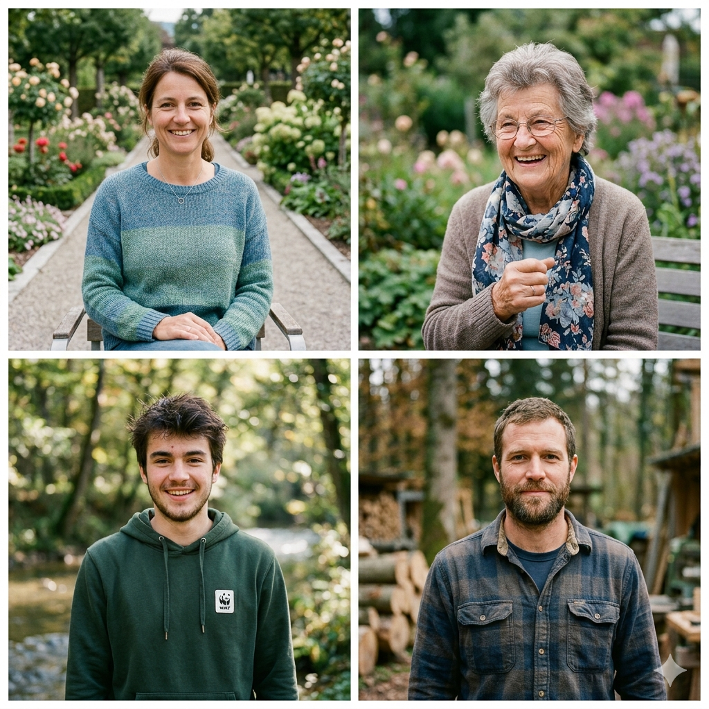

Im Januar 2024 startete die Gemeinde Helvetingen als erste Schweizer Gemeinde den offiziellen Pilotbetrieb des Sozialkreditsystems. Während zwölf Monaten nahmen 847 Haushalte freiwillig am Testlauf teil (68 % der Gesamtbevölkerung).
Jede teilnehmende Person erhielt Zugang zu einem persönlichen Punktekonto, einsehbar per App und Web. Punkte wurden durch drei Punktequellen vergeben: Zivile Verantwortung, Umwelt & Ressourcen sowie Recht & Gesellschaft. Ein unabhängiges Kontrollgremium, bestehend aus Gemeindevertretern, einem Datenschutzbeauftragten und zwei externen Experten, überwachte den Betrieb lückenlos.
Die gesammelten Ergebnisse bilden die Grundlage für den nächsten Schritt: den Roll-out auf die Stadt St. Gallen.
847 Haushalte · 68 % Beteiligung · unabhängig kontrolliert
Stand Dezember 2024
| Kennzahl | Vorher | Nachher | Veränderung |
|---|---|---|---|
| Kitaplatz-Wartezeit (Ø) | 11 Monate | 3 Monate | −73% |
| Steuerpflichtige mit Reduktion | 0% | 23% | +23 Pp. |
| Neue Vereine & Initiativen | — | 8 neue | neu |
| Photovoltaik-Anlagen installiert | 14 | 41 | +193% |
| Datenschutz-Beschwerden | — | 7 | geprüft |
| Systemfehler / Fehlbewertungen | — | 23 | korrigiert |
| Systemvertrauen (Umfrage) | — | 71% | «hoch» |
| Alle Beschwerden und Fehlbewertungen wurden durch das unabhängige Kontrollgremium geprüft und korrigiert. Datenbasis: Gemeinde Helvetingen, Schlussbericht Pilotphase 2024. | |||

«Ich war die Skeptischste von allen. Ständig bewertet werden, das klang nach Kontrolle, nicht nach Freiheit. Aber dann habe ich gemerkt: Es bewertet nicht, wer ich bin. Es sieht, was ich tue. Meine Schwiegereltern zum Arzt begleiten, mit dem Tram zur Arbeit fahren, das zählte plötzlich. Und der Kitaplatz für unseren Jüngsten? Der war nach drei Monaten da, statt einem Jahr.»
«Mein Mann und ich dachten, das sei nichts für uns Ältere. Aber unsere Tochter hat uns angemeldet. Ich backe jeden Monat für den Mittagstisch der Gemeinde, das mache ich seit zwanzig Jahren. Neu gibt es Punkte dafür. Ich brauche die Punkte nicht wirklich. Aber es fühlt sich gut an, dass es jemand weiss.»
«Das System kennt meine Vergangenheit nicht. Das war für mich das Entscheidende. Habe natürlich in meiner Jugend schon manche Jugendsünden bgangen. Aber hier beginnt jeder bei null. Was zählt, ist was du jetzt tust. Ich habe mit dem WWF Einsätze geopfert, Wälder aufgeräumt. Und das hat mir eine WG in Zürich gebracht. Nicht Glück. Mein Engagement zählt.»
«Als Selbstständiger war ich zuerst misstrauisch. Noch mehr Bürokratie. Aber es ist das Gegenteil. Ich liefere pünktlich, ich halte, was ich verspreche, und das schlägt sich jetzt auch in meinem Score nieder. Zwei Aufträge habe ich direkt über die Gemeindeplattform bekommen, weil mein Punktestand sichtbar war. Das ist Vertrauen, das man sich verdient.»
Die Ergebnisse aus Helvetingen sprechen für sich. Helfen Sie mit, das System auf die nächste Stufe zu bringen – durch Ihre Unterschrift und Ihre Unterstützung.